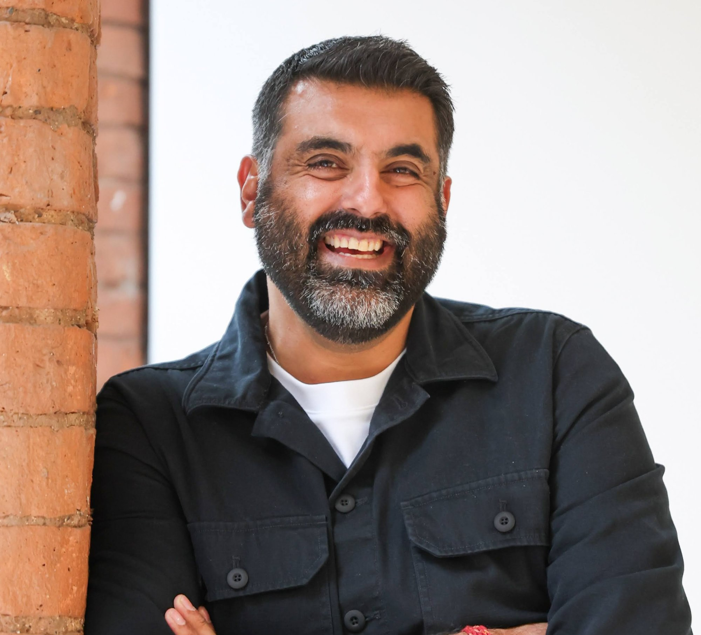

We are regulated healthcare's patient experience data company.
Founded in the UK. Manchester operating model. Building the Equity Engine, the platform that closes the gap between clinical-trial populations and the populations who actually use the products.
Regulated healthcare has a population coverage problem.
The evidence that supports approvals, HTA decisions, procurement and post-market surveillance is drawn from populations that do not match the populations the products are used on. Regulators, payers and procurement bodies have converged on this issue and are writing it into their rules faster than sponsors and developers can respond.
Unwritten Health builds the Equity Engine, a patient experience data platform for regulated healthcare. One product. One dataset. One data asset, served through three concentric access tiers so each buyer pays at the value they receive, not at a discounted list price.
The Equity Engine is anchored by a growing panel of consented UK participants recruited through community partners, patient charities, faith-based organisations, disease-specific groups and health-innovation networks, rather than through advertising or panel aggregation. Every participant completes a Social Determinants of Health profile at sign-up, so every downstream output can be stratified by the subgroups that regulators, HTA bodies and NHS procurement ask about.
Sponsors, Software as a Medical Device manufacturers, medical-device manufacturers, digital-health developers, and NIHR-funded academic teams use the Equity Engine to produce submission-ready evidence for EU JCA, NICE ESF, NHS DTAC, EU MDR PMCF and UK PMS 2025.
Fixed scope. Fixed price. Fixed duration. Regulatory-grade output the first time.

FounderAshish Rishi
Ashish is the founder and CEO of Unwritten Health. He built and exited WE ARE COUCH LTD, a patient-engagement agency, to approximately £3m ARR over nine years, bootstrapped. That business worked on the demand-side of pharma. Unwritten Health works on the supply-side of evidence.
Ashish serves on the Scientific Advisory Board for IHI READI, a Horizon Europe initiative on health equity and research infrastructure, and on the executive advisory board of a ~€66m European clinical-trials inclusion consortium.
His framing of healthcare inclusion is practical, not moral: it is an evidence and design problem. The right question is not "who deserves to be included?" It is "who is not in the data, and what does that cost us?"
Ashish is based in London. Unwritten Health runs a Manchester operating model.
One dataset. Three concentric access tiers. Mission and margin protected together.
Pharma & biotech
Sponsor-commercial engagements at fixed price, funded from medical-affairs and market-access budgets. This is the commercial engine that keeps the dataset sustainable and the panel growing.
Medtech & digital health
Regulated-buyer value, scoped against notified-body and NHS-procurement risk. From the PMCF Equity Gap to the SaMD Population Performance Red-Team, each engagement targets a specific regulatory gate.
Academic, NIHR & non-profit
Public-good access. NIHR PPI packages at cost, dataset access at cost for academic secondary analysis, and free access by application for non-profits. Community partners co-design outputs and share sponsor engagement fees.
Work with us
Take the Scorecard for a plain-English diagnosis of your evidence exposure, book a 20-minute call, or write to us directly. Every commercial engagement starts with the Scorecard.